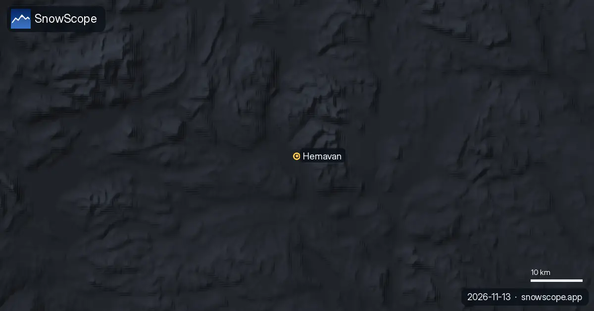

Hemavan in December: Sweden's deepest early snow, far from the crowds
Hemavan sits in the Swedish mountains near the Norwegian border and builds deeper December snow than any Nordic resort we compared. On a typical 15 December, mid-mountain (799 m) holds 82 cm, and in every single one of our 46 winters of records that height had snow 30 cm or deeper in the week before Christmas.
See the live snow forecast for Hemavan in the SnowScope appSnow depth, powder alerts and the 3D map, free.
Why December here beats the Alps and other Nordic areas
Hemavan's strength is height combined with latitude. The base lies at 462 m, mid-mountain at 799 m, and the top at 1136 m. That vertical range catches snow at every level, and far north in Swedish Lapland, December snow is reliable. At mid-mountain, 100 % of our 46 winters had 30 cm or more from 8 December onwards. At the summit it was every winter in every single December week.
Compare this to Åre, Sweden's bigger resort: Åre's mid-mountain (853 m) had only 40 cm on a typical 15 December, and snow cover in mid-December was secure in 89 % of winters there, not 100 %. For skiers burned by thin Decembers elsewhere, Hemavan offers certainty.


The base is the gamble; mid-mountain and top are safe
Early December at base level (462 m) was not guaranteed: 78 % of winters had 30 cm or more in the first week. But from 8 December onwards, coverage jumped to 89 %, then 91 % by Christmas week. If you arrive before 8 December, stay higher. Mid-mountain and the top had cover in every single winter from early December through the month.
On Christmas week itself, the depth picture improves everywhere. The base typically held 62 cm on 24 December; mid-mountain 93 cm; the top 128 cm. In 96 % of our winters, mid-mountain had 60 cm or more in Christmas week—genuine powder country.
Water stored high, released through spring
Deep December snow here is not just for skiing; it is water stored in the mountains. That snowpack usually lingers into spring because the deepest month at mid-mountain is April, when typical depth reaches 161 cm. Last winter, while many Alpine resorts struggled, Hemavan held 88 cm at mid-mountain on 15 December and kept building.
The long-term trend shows a slight shift. December depth at mid-mountain averaged 89 cm in the first 15 winters of our records but 81 cm in the last 15 winters. Yet even in recent years, every Christmas week had 30 cm there. The snow is resilient.
Small area, big benefit: fewer people, low cost
Hemavan has 37 km of mapped runs and 9 lifts. That is not a destination for size chasers. It is a village resort, quiet before Christmas, far from the main Swedish cities and even farther from international airports. The trade-off is worth it if you value powder and peace over sprawl and nightlife.
Lift-pass prices are sold dynamically online, and we could not confirm a fixed rate on 13 November 2026. Check the operator's official shop for your chosen week. Travel logistics matter here more than at a lowland resort: plan your journey early, because northern Sweden has limited flights and long winter transfers.
Which week, which height, which slopes
Any mid-December to late-December week works at mid-mountain and above. If you must ski the base, arrive from 8 December onwards. The top (1136 m) is snow-safe from the start of the month and receives the most: 112 cm typical on 15 December, 139 cm by New Year's Eve.
The site sits in terrain where off-piste skiing is both tempting and risky. Deep snow and steep mountain slopes create avalanche hazard. Before you venture beyond the marked runs, read the Swedish avalanche forecast from Lavinprognoser and carry proper safety gear.
Tips for skiers
- Mid-mountain and summit are snow-safe from 1 December. The base is safer from 8 December on.
- Visit in Christmas week for the deepest snow: mid-mountain typically has 93 cm on 24 December.
- Book your travel and lift access early; northern Sweden has few winter flights and long transfers.
- Off-piste terrain is tempting but hazardous. Check the Swedish avalanche bulletin before you go off-piste, and carry beacon, probe and shovel.
- This is a quiet, small-area escape, not a resort for skiers who need variety and après-ski every night.
About these numbers
Resort snow depths are the deepest snow on the resort's upper slopes on the date shown; they are estimates for an area, not a measurement at one point. Forecasts can change. Always read the official avalanche bulletin before going off-piste.
Official avalanche bulletins: Lavinprognoser (Naturvårdsverket)
Cite this report
For research, teaching or the press: the numbers and charts are free to reuse under CC BY 4.0 with this citation.
SnowScope (2026), Hemavan in December: Sweden's deepest early snow, far from the crowds, https://snowscope.app/blog/en/2026/11/hemavan-december-skiing-lapland-deep-snow-budget.html, accessed 2026-11-14
SnowScope (Atlas Labs). (2026, November 14). Hemavan in December: Sweden's deepest early snow, far from the crowds. SnowScope snow reports. https://snowscope.app/blog/en/2026/11/hemavan-december-skiing-lapland-deep-snow-budget.html
BibTeX
@misc{snowscope2026hemavandecemberskiinglap,
author = {{SnowScope (Atlas Labs)}},
title = {Hemavan in December: Sweden's deepest early snow, far from the crowds},
year = {2026},
month = nov,
howpublished = {\url{https://snowscope.app/blog/en/2026/11/hemavan-december-skiing-lapland-deep-snow-budget.html}},
note = {Published 2026-11-14 15:34 UTC; accessed 2026-11-14}
}· CC BY 4.0 · Methods, data and tools →
Hemavan: snow and temperature by height, this winter vs last (tools) →
Follow Hemavan
Free: a message when fresh snow is coming, and the forecast every morning.
More snow reports

Bergen city is snow-free on 13 November, but Kvamskogen 35 km inland has 5 cm. Heavy rain arrives Sunday with little chance of snow.

On 13 November 2026 the weather stations in Stockholm and Helsinki measured 0 cm of snow while Sälen had 45 cm and Umeå 20 cm. Height, the sea, the city and the track of the storms explain it, with numbers from 46 past winters.

Trondheim's weekend brings rain and mild air, not snow. Inland snow sits 5–18 cm deep, but Bymarka trails are wet. Know the year-round leash rules before you walk.